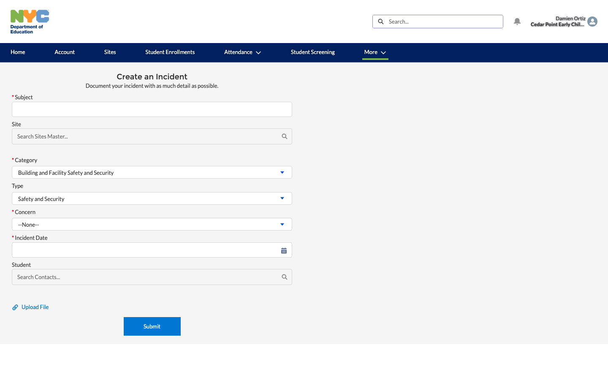
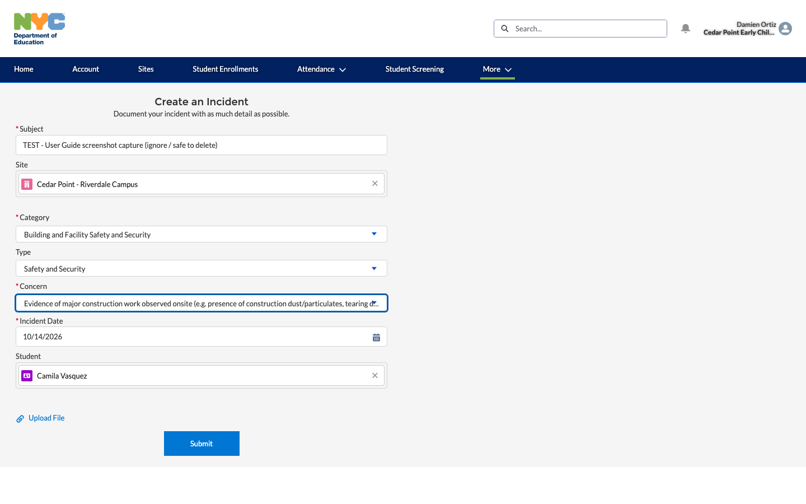
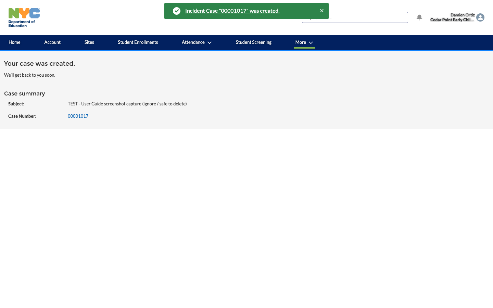
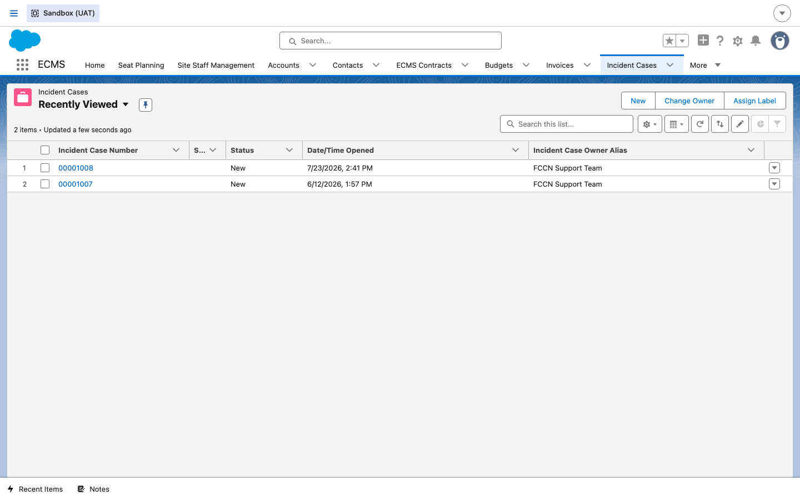
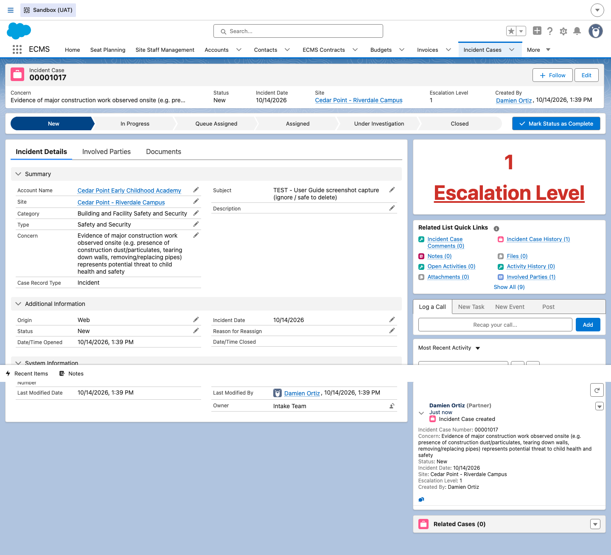
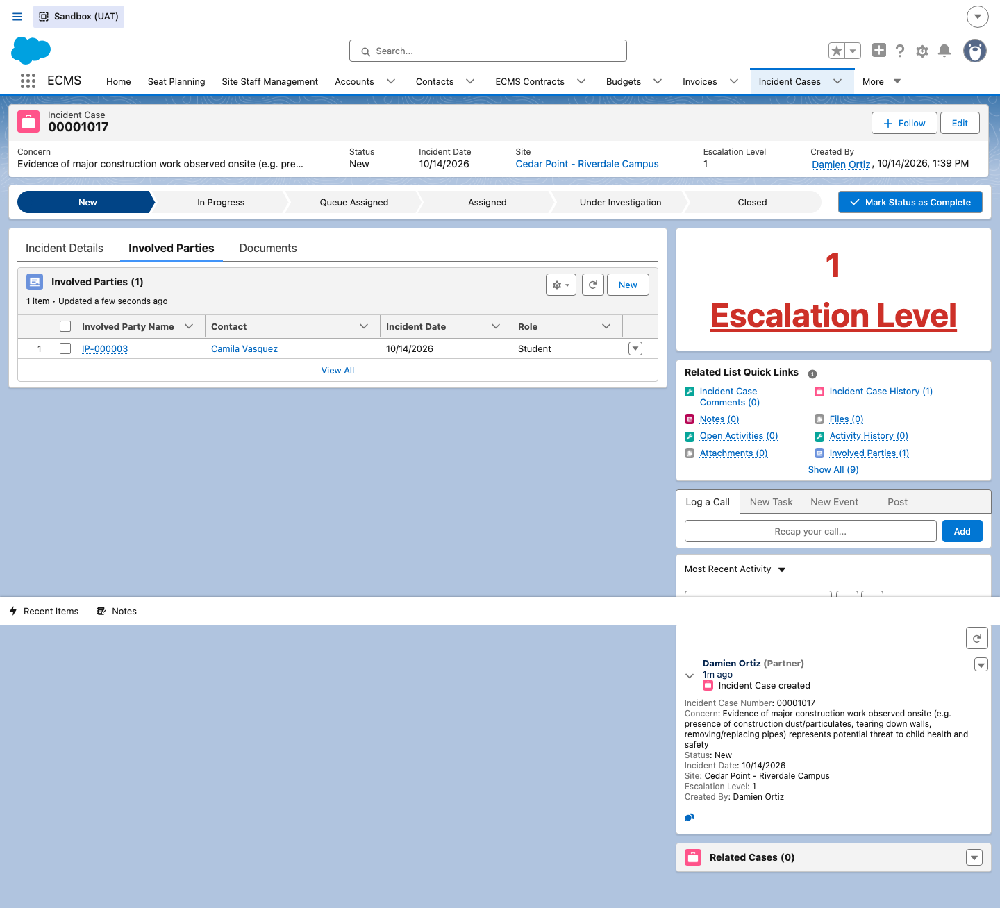
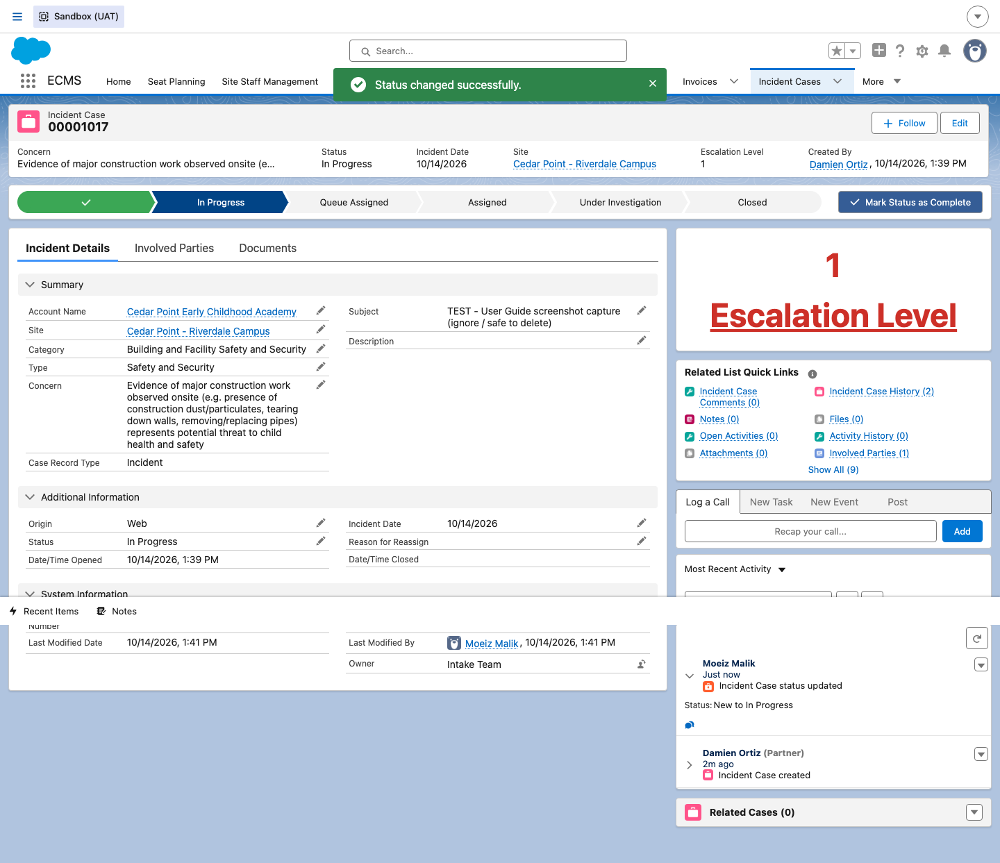
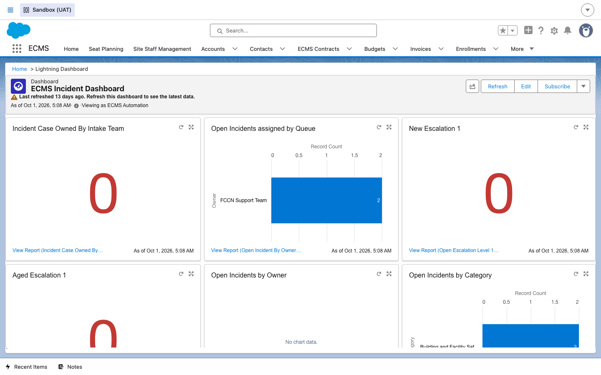

Incident Reporting
How a vendor reports a safety, facility, or program incident, and how DOE staff track it from intake through investigation and closure — built on Salesforce's standard Case object, relabeled throughout ECMS as Incident Case.
Overview
An Incident in ECMS is a Salesforce Case record using one of two
record types — Incident (CBO) or FCCN_Incident (FCCN) —
confirmed live via the object's own recordTypeInfos. Vendors self-report incidents through
the portal; DOE staff triage, investigate, and close them internally. A fixed taxonomy of
Category / Type / Concern values (e.g. Facility and
Maintenance, Safety and Security, Closures) drives both the vendor-facing form and internal reporting.
1Vendor: report an incident
DO From the vendor portal, click the Report Incident quick-action tile on the Home page, or More → Report Incident from the top nav.
RESULT A Create an Incident form opens with Subject, Site (lookup), Category, Type, Concern, Incident Date, and an optional Student lookup — Category/Type default to Building and Facility Safety and Security / Safety and Security, and the Concern picklist's options change based on the Category/Type picked.

DO Fill in the required fields (Subject, Category, Concern, Incident Date) and optionally link a Site and Student, then click Submit.
RESULT ECMS confirms with “Incident Case ‘<number>’ was created” and a Case summary showing the Subject and new Case Number — confirmed live end to end (Case 00001017, Cedar Point - Riverdale Campus, student Camila Vasquez).


2Internal: view a submitted incident
DO As an internal user, open the Incident Cases tab.
RESULT A list loads showing every submitted Incident Case with Incident Case Number, Status, Date/Time Opened, and Incident Case Owner Alias — the Owner is typically a queue (e.g. “Intake Team”, “FCCN Support Team”), not an individual user, confirming incidents route to a team first.

DO Open a specific Incident Case.
RESULT The detail page shows a path bar with six stages (New → In Progress → Queue Assigned → Assigned → Under Investigation → Closed), the Category/Type/Concern taxonomy, and a prominent Escalation Level indicator (1–4) in the sidebar — plus an Involved Parties tab that auto-links the Student named on submission (here, Camila Vasquez as Role Student).


3Internal: edit an incident and move it through its path
DO Click a later stage on the path bar (e.g. In Progress), then Mark as Current Status.
RESULT ECMS confirms “Status changed successfully”, the Status field and path bar both update, and the Chatter feed logs the exact transition (“Incident Case status updated — Status: New to In Progress”) with a timestamp and the editing user's name — confirmed live on Case 00001017.

4Internal: reassignment and escalation
Two more Phase 1 topics for this module are grounded here in the record's real fields and list-view actions, rather than a full end-to-end reassignment walkthrough:
- Update Assignment Paths: the Incident Cases list view has a Change Owner button (seen alongside New/Assign Label in Step 2's list screenshot) — this is how an incident gets reassigned between queues (e.g. from Intake Team to FCCN Support Team) or to a specific investigator, and the object has its own Reason for Reassign text field to document why.
- Escalation: confirmed live fields Escalation Level (a 1–4 picklist, prominently surfaced in the sidebar) and a separate Escalated checkbox together drive how seriously an incident is being tracked — Case 00001017 sits at Escalation Level 1, the baseline.
5Internal: incident dashboards
DO Open the ECMS Incident Dashboard.
RESULT Six live widgets summarize the incident queue at a glance: Incident Case Owned By Intake Team, Open Incidents assigned by Queue (broken out by team, e.g. FCCN Support Team), New Escalation 1, Aged Escalation 1, Open Incidents by Owner, and Open Incidents by Category — giving DOE staff a proactive view of backlog and escalations without opening every case.

6System Admin: queue configuration
The Phase 1 topic “Configure ECMS Queue Field Values” refers to Setup-side administration of the Case assignment queues themselves (e.g. Intake Team, FCCN Support Team) — who's a member of each queue, and which queue a given incident routes to by default — rather than a separate custom object. A System Administrator manages this the same way as any other Salesforce queue, under Setup → Queues. A live walkthrough of changing queue membership wasn't performed for this guide to avoid altering a shared routing configuration that other open incidents currently depend on — confirm the exact Setup path with a System Administrator before making a change.